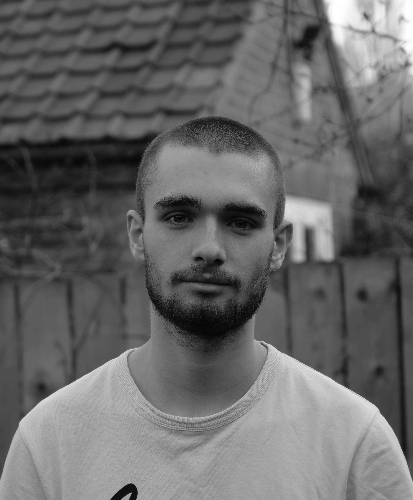

Sam Bond is a Yorkshire-based filmmaker and director, working in fiction, documentary, and theatre. He is part of arts co-operatives Any Other City Films and The Northern Project.
An experienced video editor, he has worked on various commissioned projects, such as the televised Stand Up to Racism North East 2021 campaign for UN Anti-Racism Day, and for global organisation International Coalition of Sites of Conscience.

An experienced video editor, he has worked on various commissioned projects, such as the televised Stand Up to Racism North East 2021 campaign for UN Anti-Racism Day, and for global organisation International Coalition of Sites of Conscience.
WORK
Assistant Director
Around the World in Eighty Days York Theatre Royal (August 2021) - Dir. Juliet Forster
Cinderella York Theatre Royal (December 2021) - Dir. Juliet Forster
Editor
Join Us! Campaign Stand Up to Racism North East (March 2021)
Arc of Dialogue Training Video International Sites of Conscience (April 2021)
Programme Curator
A World Turn'd Upside Down (Film Practices BA Diss. Showcase) Newcastle University (July 2020)
Around the World in Eighty Days York Theatre Royal (August 2021) - Dir. Juliet Forster
Cinderella York Theatre Royal (December 2021) - Dir. Juliet Forster
Editor
Join Us! Campaign Stand Up to Racism North East (March 2021)
Arc of Dialogue Training Video International Sites of Conscience (April 2021)
Programme Curator
A World Turn'd Upside Down (Film Practices BA Diss. Showcase) Newcastle University (July 2020)